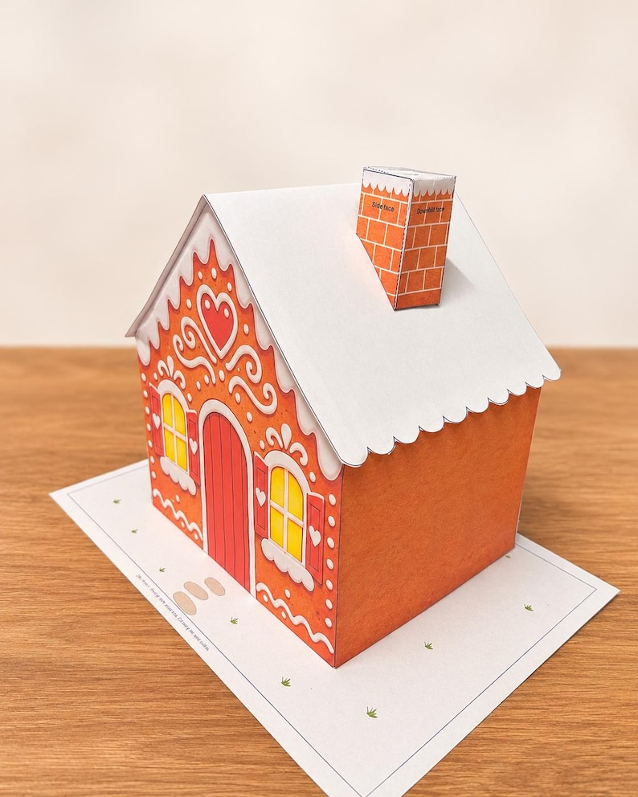

Digital download
Christmas Paper Craft for Kids · 3D Gingerbread House Activity · 14 Page PDF
Buy on EtsyEVERY STAR LEARNING · DIGITAL DOWNLOADS
A little paper house. A Christmas activity to make your own. Download the 14-page kit, then cut, fold and decorate together.
View the printableDownload through Etsy · Print at home · No physical item posted

One PDF contains full-colour A4 templates for the house walls, snowy roof and foldable chimney, plus a garden base and picket fences. Decorate the scene with six standing Christmas trees, large and small wreaths, printable sweets and 12 gingerbread characters.
A printer, good-quality A4 card, scissors and a glue stick. Print at 100% actual size, cut the outlines, fold the dashed lines and glue the house together before adding the garden pieces. Adult help is recommended for cutting and assembling small parts.
The photograph shows an assembled example. This is a paper craft PDF: no food, printed pieces or finished model is posted.
For other festive activities, browse our Christmas cards, gift tags and colouring printables.
Digital download
Christmas Paper Craft for Kids · 3D Gingerbread House Activity · 14 Page PDF
Buy on EtsyPrices shown were checked on Etsy on 26 November 2026. Confirm current prices, file details and usage terms on Etsy.
No. It is a printable paper house craft. No food or assembled model is supplied.
The kit is listed as a 14-page PDF. Check the Etsy listing for the full contents and printing instructions.
Purchase through the linked Etsy listing, then follow Etsy’s download instructions. For help downloading and printing, read our printable FAQs.